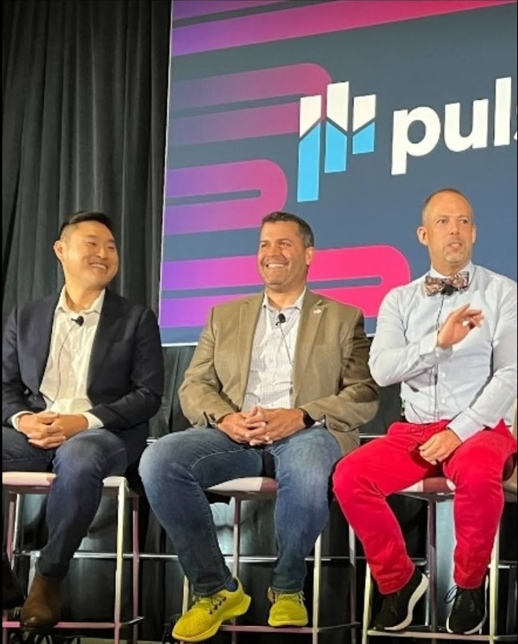

01
Measure
Can you see what's happening?
Health scores that predict something, data sources you trust, and a quantified account of why customers actually leave.
Customer success consulting for B2B SaaS
Series A to C
Most customer success teams are too reactive. They know which accounts they're worried about after they become an escalation.
I help Series A to C SaaS companies understand where their risk lies and how to maximize growth opportunities. My approach starts with data,
then builds the team and tools that act on it. Two decades of
doing this from the inside, running teams up to $400M ARR scale, means I know which parts you
need now and which can wait.
Those numbers come from leading customer success and product teams at
“I brought Dan in to fix customer success, and within a quarter he quickly saw what the function needed, made the hard calls, and gave us real segmented coverage across our customer base. Dan transformed the function to reach customers before problems found us, without adding cost, all while keeping customers and the team steady through the change. He left Forcepoint in a much, much better state than when he arrived.”
Who this is for
Typically $3M to $50M in ARR, a customer success team of two to forty, and a board that has started asking about net revenue retention. The engagements are sized and priced for companies at that stage, not for enterprise transformation budgets.
Leading a larger CS organization with the same problems? The math is the same. Let's chat.
You're probably here because one of these is true
The opportunity
Sales and marketing got instrumented a decade ago. Most CS teams still run on a red-yellow-green light and a good CSM's gut. At a company growing fast, that isn't a failure. It's what there was time for.
This happens too often: a health score nobody quite trusts, portfolios split by account count instead of risk, renewal forecasts that are really sentiment with a number attached, and a CS tool doing a fraction of what it was bought for. None of that is a people problem. It's a measurement problem, and measurement problems have clean solutions.
The work is finding where revenue is leaking, putting a number on it, and rebuilding the system so the answer stays visible long after I'm gone. For a Series A to C company, that usually means building it right the first time rather than untangling it later.
How the work is organized
Three practice areas, in the order they actually have to happen. You can't design a coverage model on data you don't trust, and AI applied to a broken process just makes the wrong answer arrive faster.
Health scores that predict something, data sources you trust, and a quantified account of why customers actually leave.
Segmentation, coverage math, roles, ratios, and the operating cadence that turns a signal into an intervention.
Where AI genuinely pays inside a CS org, where it doesn't, and working automations your team will actually use.
A full assessment of your retention system - data, health scoring, segmentation, coverage, and operating rhythm - ending in an actionable analysis of where revenue is leaking and a phased roadmap to close it.
This is the same assessment I ran in my first 60 days before a transformation that moved net revenue retention from roughly 103% to 112% across a $100M book. This can run faster for a Series A to C book, and it ends with a plan your current team can execute.
What you get
Not ready for the full diagnostic? Start with a one to two week Retention Snapshot - get a quick analysis of where things stand. Cost of the Snapshot is credited in full toward the Diagnostic if you book one within 30 days.
“Dan runs Customer Success like an operator. He put real-time health dashboards in front of every CSM and manager, which lifted proactive customer engagement 149%, and built a CS operations and digital team that reached every segment, more than doubling our NPS response rate and raising the score by over 30 points. His years of experience and depth of knowledge are impressive. I’d hand him a customer success function to rebuild again without hesitation.”
Why this works
Most of what I know about retention I learned by running customer success teams and being accountable for it.
But more than that, I spent
five and a half years inside the company that invented the category, advising leading companies on their customer success strategy.

SVP and Global VP roles carrying as large as a $400M ARR book and a 90-person organization. I also built the Digital and Scaled CS team at Atlassian from zero. Earlier in my CS days I ran a 1,200-customer book using only homegrown tools. Scale taught me what moves retention. Starting from zero taught me what a small team can skip.
Five and a half years at Gainsight, the company that defined the category, across customer success, product management, and product operations. NXT Certified Admin, and a 70-seat instance architected from a blank slate. I'll tell you which tool fits your stage, and when earlier stage tools might still be the right answer.
I'm hands on and have built agents for renewal forecasting and risk prioritization. I developed custom portfolio management software that does a full portfolio audit. Ask for a demo on the first call — it's the fastest way to tell the difference between someone who builds and someone who advises.
No junior team, no hand-off after the sale, no bench of analysts behind the curtain. The person who scopes the work does the work and delivers the readout. That is also why the calendar is capped, and why I'll tell you early if a project isn't a fit.
“Dan quickly diagnosed what our tech-touch and CS operations functions were missing, then built the team to deliver it from scratch. The digital and SMB program teams he led extended our reach roughly 100x, and his Gainsight operations team gave leadership real-time visibility into customer health for the first time. Few leaders can both design the strategy and build the machinery to deliver it. Dan does both.”
“Dan brought real operational discipline to our product and design organization. He built the planning cadence and operating rhythm the teams had been missing, and used data to make roadmap trade-offs visible, which gave us a clearer roadmap and faster delivery. Having started in customer success, he brought cross functional collaboration between Product and CS to new heights, and he never stopped bringing the customer’s view into the room.”
Thirty minutes, all signal, no noise. Let's chat about what's happening and I'll tell you whether it's a measurement problem, a design problem, or something outside customer success. Either way you leave with a clearer read than you came in with.